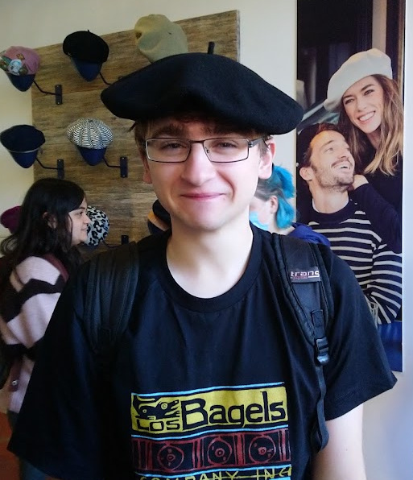
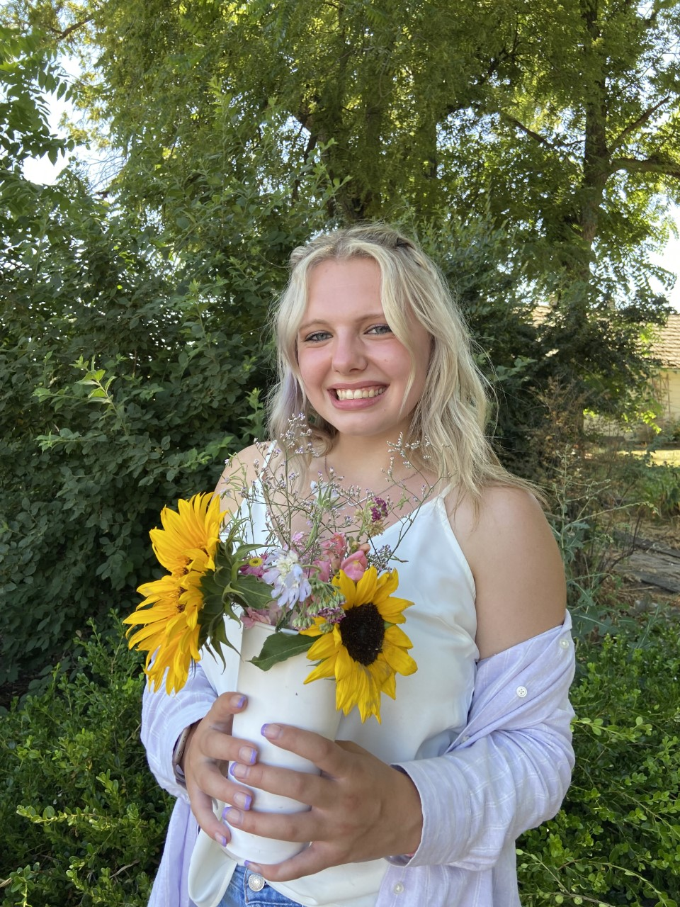

PEOPLE
FACULTY
Barrie D. Robison
I am a Professor of Biological Sciences at the University of Idaho, where I study evolution and adaptation using an unusual mixture of model systems. Over the course of my career, I have conducted research on the genetic basis of quantitative traits in Salmonids, behavioral genomics and adaptation to captivity in zebrafish, and the implementation of evolutionary models in video games. I taught Genomics and General Genetics for 15 years, and I now teach various courses in Data Science as part of our new Graduate Certificate in Professional Applications of Data Science.
Terry Soule

I am a Professor of Computer Science at the University of Idaho, and am also currently serving as Department Chair. My research interests include evolutionary computation, artificial intelligence, genetic algorithms, and evolutionary video games. I am also active in computer science education through teacher training and summer camps. I teach courses in programming at the undergraduate and graduate levels.
STAFF
Landon Wright
Creative Director, UIdaho VTD graduate, I like to make stuff.
STUDENTS
Carson Rueber

I’m a third year student at the University of Idaho majoring in Computer Science with a Minor in French. I am the lead programmer on the [Outbreak Simulator] project, and have been working for Polymorphic Games since the summer of 2021.
Jonna Waage

I am a third year undergraduate computer science major and mathematics minor at the University of Idaho. I have been a software developer with Polymorphic Games since the Fall of 2022. My current project is the TwinStick game, where I am working on the AI that controls the defensive towers.
Ava Rummler
I’m an MFA Candidate and Instructor of record at the University of Idaho where I practice and teach design. My practice focuses on human interaction through different principles of user experience design and research. My professional experience ranges from App Design to Art Direction and I’m now UX Designer for TwinStick! Here, I implement my design and research experiences to create accessible screens for TwinStick players to learn about evolution and data science. You can see how the UI/UX of project TwinStick is coming together here!
Justin Riggs
Elisha Coad
Kristin Martinet
ALUMNI
Polymorphic Games has had the priveledge to work with many amazing students since we began in the summer of 2016. We try our best to keep track of them here… If someone is missing, please help us out by letting us know!
Darwin’s Demons
Nicholas Wood Sam Heck Zach Yama Mikey Huffstutler Daniel Barney Peter Wangler Landon Wright Nick Wren Spencer Gomez Emily Ward
Project Hastur
Nicholas Wood Sam Heck Landon Wright Spencer Gomez Thomas Haynes Courtney Bryant Marlan Smith Pat Vanvorce Cameron Perry Tristan Lassiter Jacob Robison
Other
Shaelyn Pearson Luz Villagomez Chaeun Kim John Wisnowschi Brenna Dace Allessandra Kriz Jackie Davis Aaron Yama Cameron Perry Kristen Martinet
Ryan Wagoner